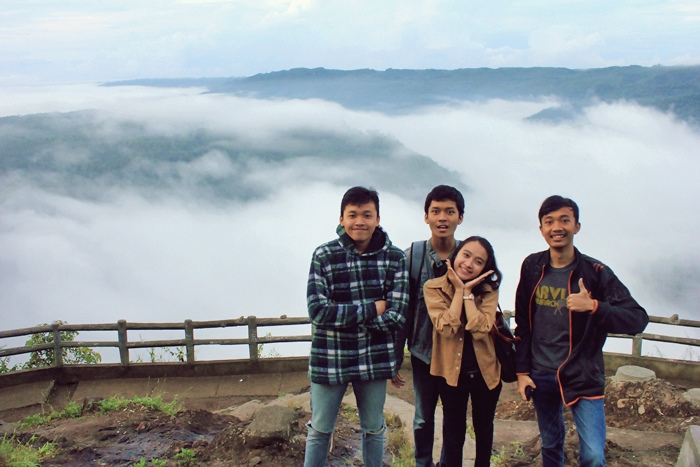

Taman Buah Mangunan
Negeri di atas awan, begitulah julukan bagi Kebun Buah Mangunan di Bantul Yogyakarta, adapun daya tarik utama tempat wisata ini adalah gardu pandang mangunan. Gardu pandang ini memiliki ketinggian sekitar 200 meter di atas permukaan laut, sehingga pengunjung bisa menikmati keindahan gumpalan awan membalut pegunungan sewu. Kebun Buah Mangunan berlokasi di Kecamatan Dlingo, Kabupaten Bantul, Kota Yogyakarta. Tempat ini tak pernah sepi penunjung apalagi pada musim liburan. Adapun yang menjadi tujuan utamanya untuk menikmati wisata ini adalah pada saat menyaksikan terbit dan tenggelamnya pajar. Disitu kita akan merasakan betapa nikmat dan indahnya alam semesta ini sambil sejenak melepas penat kehidupan perkotaan.
Taman Buah Mangunan di bangunan oleh pemerintah kabupaten bantul pada tahun 2003 silam, lokasi yang berdiri di atas lahan seluas 23 hektar ini ditanami berbagai jenis pohon buah diantaranya seperti pohon buah belimbing, rambutan dan durian. Dan terdapat juga belasan ekor Rusa yang juga di pelihara di lokasi tersebut. Sehingga menambah daya tarik tersendiri bagi pengunjung karena bisa ikut memberi makan Rusa peliharaan yang ada di lokasi tersebut.

Bagi Anda yang ingin berkunjung ke tempat wisata Kebun Buah Mangunan ini Anda bisa menikmati fasilitas yang ada dengan membeli tiket masuk sebesar Rp 5000 /orang, sangat murah sekali bila dibandingkan dengan keindahan alam yang di tawarkan. Ingin menikmati wisata yang menyejukkan mata juga paru-paru, cukup datang ke Mangunan.